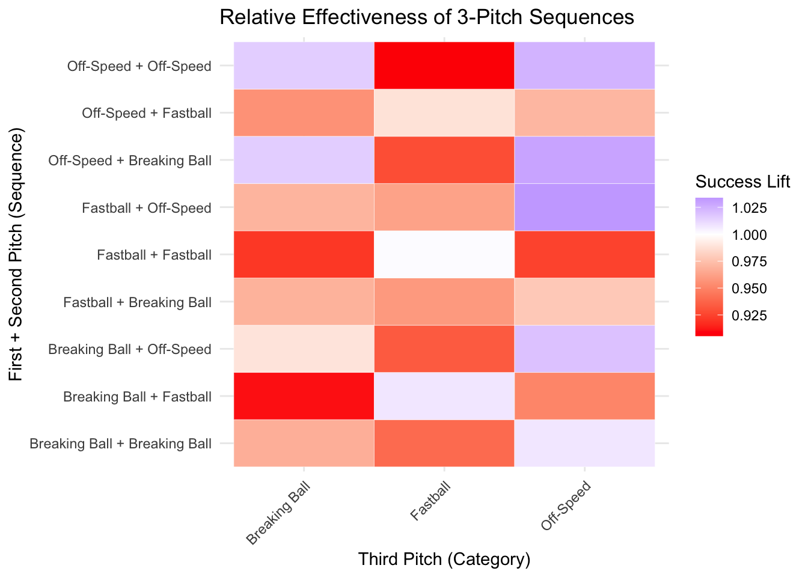
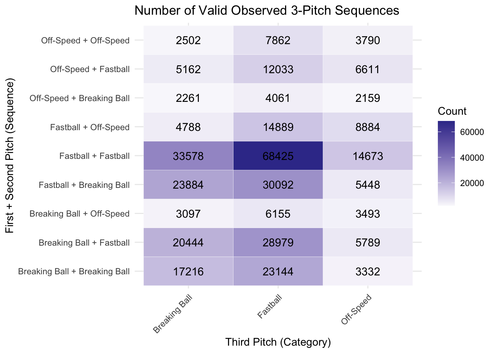

library(tidyverse)
library(knitr)
library(broom)
library(baseballr)
library(dplyr)
library(mgcv)
library(broom)
library(gt)
pitches <- read_csv("pitch_subset.csv")An Exploration of Pitch Sequencing in Baseball
F1 Score
Confusion Matrix
Model Assessment
Model Assessment through TPR/FPR, PPV/NPV, and F1 Score
Introduction
Every time a pitcher winds up to throw and a batter steps up to the plate, a multitude of factors are taken into account as they decide what pitch to throw and whether or not to swing. The primary aim of the pitcher is to get the batter out. As the pitcher aims to strike out the batter, they make elemental decisions about what type of pitch to throw and where to throw it. At the time of pitch, the pitcher has obviously made their decision, however, the batter faces a different scenario. Due to the extreme speeds of the pitch, there is little time to react. Many claim that mathematically, it should be nearly impossible for humans to react to and hit an MLB pitch (https://www.smartnonsense.com/post/baseball). We know, however, that these pitches are hit often and well. Ultimately, the batter is put in a position in which they have to predict the pitch that the pitcher is throwing. This becomes an information game. The batter will have some information from factors such as the windup, but they will also know what pitches have been thrown in the past. All this is to say: both the pitcher and batter are trying to get into the mind of the other, predicting their next move. This would imply that the sequence of pitches that the pitcher employs should play a significant role in their success. If a pitcher threw only one type of pitch or one sequence of pitches, batters would surely catch on and modify their reaction to account for it. Pitch sequencing describes the order of pitches by type, that a pitcher decides to throw during an at-bat. For example, a pitch sequence may be a four seam fastball, a curbevall, then a slider, and finally a two seam fastball.
Pitch sequencing is important since it can increase uncertainty in the batter and help systematically deceive them. For example, a pitcher may utilize a change up after a fastball, as it uses the same arm motion but travels much slower. This slower ball speed can interfere with the batter’s timing and cause an early swing if they were expecting a fast ball. This intuitive proposition that pitch sequencing might play a central role in effective pitching can be validated using the extensive baseball data that exists today. The analysis we will walk you through in this project will help us answer the following research question:
Does pitch sequencing matter in the MLB?
If it does, what are the most effective sequences and why might that be?
After conducting this analysis, you will be equipped to bring data driven decisions to your dugout, arguing for the best next-pitch type decision based on those thrown previously.
Displaying Data in a Table
The first thing we will do is load in the data and necessary packages. The data can be downloaded here. We will include all pitches that occurred in the 2024 MLB season, roughly 700,000 in total:
In order to understand what all is contained in the dataset we can run the “dim” function.
dim(pitches)[1] 705728 19As we can see, there are 705,728 observations. In the code below, we used the select function to isolate the variables we wanted to investigate (pitch_type, game_date, player_name, balls, and strikes). We then only want to look at the first 10 observations, so we run head(10). Lastly in order for the output to be formatted nicely, we run gt() and set a table header.
pitches %>% select(pitch_type, game_date, player_name, balls, strikes) %>%
head(10) %>%
gt() %>%
tab_header("A selected sample of the PITCHf/x data",
"Note: This is not all of the important columns, just a view for demonstration purposes.")| A selected sample of the PITCHf/x data | ||||
|---|---|---|---|---|
| Note: This is not all of the important columns, just a view for demonstration purposes. | ||||
| pitch_type | game_date | player_name | balls | strikes |
| KC | 2024-10-30 | Buehler, Walker | 1 | 2 |
| KC | 2024-10-30 | Buehler, Walker | 1 | 1 |
| FC | 2024-10-30 | Buehler, Walker | 1 | 0 |
| KC | 2024-10-30 | Buehler, Walker | 0 | 0 |
| KC | 2024-10-30 | Buehler, Walker | 3 | 2 |
| FF | 2024-10-30 | Buehler, Walker | 2 | 2 |
| KC | 2024-10-30 | Buehler, Walker | 2 | 2 |
| KC | 2024-10-30 | Buehler, Walker | 2 | 1 |
| FF | 2024-10-30 | Buehler, Walker | 1 | 1 |
| KC | 2024-10-30 | Buehler, Walker | 0 | 1 |
Creating New Variables
As we work through this next section, some questions to consider are:
- How should we clean the data?
- What variables need to be considered?
- What should be our response variable?
- What outcomes are good for the pitcher?
- What outcomes benefit the batter?
Since our aim is to find what pitch sequences, if any, lead to the greatest pitch success, we first need to define what success is for the scope of our project. We call any of these outcomes successful for the reasons to follow: swinging strike, called strike, foul tip, swinging strike blocked, foul, foul bunt, missed bunt, and bunt foul tip. These can be considered successful for the pitcher because they all count as a strike for the batter without putting the ball into play. Effectively, the pitcher gains an upper hand on the batter and progresses in the count when one of these occur. Alternatively, other outcomes such as a hit or a ball will be considered unsuccessful since the batter either succeeds putting the ball into play or gets another step towards a hitter’s count. Remember: we are considering a “success” from a pitcher’s perspective.
Now let’s create a success variable. We will consider a success whether a pitch results in a strike or not. Since foul balls result from less than ideal contact with the bat, we will consider those successful from the pitcher’s perspective. The rest of the included descriptions follow this logic and refer to successful pitches.
To determine the values we want to pull out for success, we need to look at the different options available to us in the data. To do this we can run the following code:
unique(pitches$description) [1] "swinging_strike_blocked" "swinging_strike"
[3] "ball" "foul"
[5] "called_strike" "hit_into_play"
[7] "blocked_ball" "foul_tip"
[9] "foul_bunt" "hit_by_pitch"
[11] "missed_bunt" "bunt_foul_tip"
[13] "pitchout" Looking at the list of descriptions provided by the output we can begin to determine the descriptions we would consider success from the pitchers view.
In order to create a new variable we will use the mutate function. Within mutate, you start by creating a name for your new variable and setting it equal to the rule or formula you want it to become. For “success”, we want all pitches with a description of: swinging_strike, called_strike, foul_tip, swinging_strike_blocked, foul, foul_bunt, missed_bunt, bunt_foul_tip, to be considered a success designated by a “1” and any other description to be considered a failure designated by a “0”. It is important to make these binary, so that we can easily calculate the percent of successful pitches.
pitches <- pitches %>%
mutate(success = if_else(description %in% c("swinging_strike", "called_strike", "foul_tip", "swinging_strike_blocked", "foul", "foul_bunt", "missed_bunt", "bunt_foul_tip"), 1, 0))Consideration: As you work through this SCORE Module, consider the following: A well hit pitch that goes just foul can provide the batter a lot of confidence that they understand and can predict the pitcher. If we were to consider fouls “failures” for the pitcher rather than “successes”, how would our outputs change?
With the success variable established, we’ll take a brief look at the pitch types and their success rate in the data. We want to create a table that shows us the probability of success for each of the pitch types observed. In order to do this we will need to use the group_by() function in order to subset the data by pitch_type. Then the summarise function allows us to view the total pitches in each pitch type and calculating the mean of success allows us to see the proportion of time each pitch_type was successful. Then using total_pitches we can use mutate to add a new column for success_rate. Lastly, the arrange() function allows the user to order the information by success rate and the minus forces it to be descending.
pitch_type_success <- pitches %>%
group_by(pitch_type) %>%
summarise(total_pitches = n(),
success_rate = round(mean(success), 4)) %>%
mutate(percent_total_pitches = round((100 * total_pitches / sum(total_pitches)), 4)) %>%
arrange(-success_rate)
pitch_type_success %>%
gt() %>%
tab_header("Pitch Type", "Success rate and Percent of Occurence")| Pitch Type | |||
|---|---|---|---|
| Success rate and Percent of Occurence | |||
| pitch_type | total_pitches | success_rate | percent_total_pitches |
| FF | 224988 | 0.4992 | 31.8803 |
| FO | 144 | 0.4931 | 0.0204 |
| NA | 285 | 0.4877 | 0.0404 |
| FC | 56762 | 0.4714 | 8.0430 |
| SL | 111957 | 0.4683 | 15.8640 |
| SI | 112013 | 0.4680 | 15.8720 |
| KC | 11749 | 0.4592 | 1.6648 |
| CU | 46241 | 0.4568 | 6.5522 |
| ST | 43349 | 0.4560 | 6.1425 |
| SV | 2651 | 0.4489 | 0.3756 |
| FS | 21218 | 0.4223 | 3.0065 |
| KN | 971 | 0.4161 | 0.1376 |
| CH | 71945 | 0.4061 | 10.1944 |
| SC | 182 | 0.3736 | 0.0258 |
| CS | 21 | 0.3333 | 0.0030 |
| FA | 626 | 0.3307 | 0.0887 |
| EP | 575 | 0.2609 | 0.0815 |
| PO | 51 | 0.0000 | 0.0072 |
Something you may notice is that one of the rows is NA for Pitch Type. This is likely because it did not clearly fall into one of the categories. Therefore rather than leave it as NA, we can change the name to be “Other”. In order to do this we subset the data by using brackets and find every where there is currently NA, and replace it with “Other”. Using the unique() function we can verify that there are no longer NA entries.
pitch_type_success$pitch_type[is.na(pitch_type_success$pitch_type)] <- "Other"
unique(pitch_type_success$pitch_type) [1] "FF" "FO" "Other" "FC" "SL" "SI" "KC" "CU" "ST"
[10] "SV" "FS" "KN" "CH" "SC" "CS" "FA" "EP" "PO" Consideration: We will going back to using our original dataframe “pitches” so it will be important to also run the following code:
pitches$pitch_type[is.na(pitches$pitch_type)] <- "Other"Now when we run the code from before, we can see the change in our table.
pitch_type_success %>%
gt() %>%
tab_header("Pitch Type", "Success rate and Percent of Occurence")| Pitch Type | |||
|---|---|---|---|
| Success rate and Percent of Occurence | |||
| pitch_type | total_pitches | success_rate | percent_total_pitches |
| FF | 224988 | 0.4992 | 31.8803 |
| FO | 144 | 0.4931 | 0.0204 |
| Other | 285 | 0.4877 | 0.0404 |
| FC | 56762 | 0.4714 | 8.0430 |
| SL | 111957 | 0.4683 | 15.8640 |
| SI | 112013 | 0.4680 | 15.8720 |
| KC | 11749 | 0.4592 | 1.6648 |
| CU | 46241 | 0.4568 | 6.5522 |
| ST | 43349 | 0.4560 | 6.1425 |
| SV | 2651 | 0.4489 | 0.3756 |
| FS | 21218 | 0.4223 | 3.0065 |
| KN | 971 | 0.4161 | 0.1376 |
| CH | 71945 | 0.4061 | 10.1944 |
| SC | 182 | 0.3736 | 0.0258 |
| CS | 21 | 0.3333 | 0.0030 |
| FA | 626 | 0.3307 | 0.0887 |
| EP | 575 | 0.2609 | 0.0815 |
| PO | 51 | 0.0000 | 0.0072 |
It is important to note that each pitch type has a varying level of frequency in the data. Most commonly, we observe “FF” - four seam fastballs, and infrequently we see “FO” - forkballs.
Consideration: This imbalance in pitch type frequency should be noted as we continue as it may have a significant effect on our results.
Furthermore, we notice very similar overall success rates for each pitch type. This is to be expected since if one pitch showed an observable advantage, all pitchers would begin throwing that pitch type more often and batters would adjust accordingly. This system is likely to balance out in all pitches being similarly effective as shown.
Our inspection of the pitches shows us that the data set includes 18 different types of pitches, including the previously blank one that we redefined as “Other”. We need to reduce the number of pitch types in order to keep our analysis comprehensible. This is because in pitch sequencing, the order of pitch types matter (as the name would suggest), so the number of possible three pitch sequences would follow the formula for permutations with replacement (as opposed to combinations which do not depend on order): The number of possible sequences is equal to the number of pitch types raised to the number of pitches thrown. This means that we would get 5,832 possible three pitch sequences from the 18 possible categories. In an effort to reduce this, we will combine pitch types into more general categories.
As we continue to work through this section, some questions to consider are:
- What is a reasonable number of pitch sequences that you would like to analyze?
- Which pitch sequence do you think would perform the best?
- Which do you think is the most common?
To reduce the number of sequences, we group many pitch types into categories based on similarities. For example, two-seam fastballs and four-seam fastballs are quite similar, so they will be grouped together. The chosen groups are ‘Fastballs’, ‘Breaking Balls’, ‘Off-Speeds’, and ‘Other’. Below is an explanation of the 18 pitch types and their chosen designation.
Consideration: Our pitch designation is not universally agreed upon.
pitches <- pitches %>%
mutate(pitch_category = case_when(
pitch_type %in% c("FF", "FA", "SI", "FC") ~ "Fastball",
pitch_type %in% c("SL", "CU", "KC", "ST", "SV", "SC", "CS") ~ "Breaking Ball",
pitch_type %in% c("CH", "FS", "FO", "EP", "KN") ~ "Off-Speed",
pitch_type %in% c("PO", "Other") ~ "Other"))
pitches %>%
group_by(pitch_category) %>%
summarise(count = n()) %>%
mutate(percent = 100 * count / sum(count)) %>%
arrange(-percent) %>%
gt() %>%
tab_header("New Pitch Categories", "Percent of observations in each category")| New Pitch Categories | ||
|---|---|---|
| Percent of observations in each category | ||
| pitch_category | count | percent |
| Fastball | 394389 | 55.88399497 |
| Breaking Ball | 216150 | 30.62794731 |
| Off-Speed | 94853 | 13.44044731 |
| Other | 336 | 0.04761041 |
It is worth noting that there is a moderate imbalance in the number of examples we are working with for each pitch category. This may be an issue later on when we use logistic regression and will be discussed then. With the “Other” category making up less than 0.5% of the pitches, we will ultimately discard it from consideration. Furthermore, the “Other” category is comprised of pitch-outs and undefined pitches, which are not valuable for our intended analysis. With the remaining three categories, we will now have a total of 27 unique pitch sequences.
Transition Matrix
As we work through this next section, there is one main question we will be working to answer:
- How do we determine the next pitch knowing the previous two?
In a transition matrix, the rows represent your current state and the columns represent your future state. Within a transition matrix are probabilities that denote your ability to move from your current state to the future state.
\[P_{ij} = P(\text{future state} = j| \text{current state} = i)\]
Since a transition matrix is a markov process, a key assumption is that the process is memoryless. This means that given your current state, the future event’s probability does not depend on how you arrived at your current state. In terms of baseball pitching, this means that the process does not treat a batter arriving at a 3-2 count differently if in previous states it was 0-2 and fought their way back, or if they were 3-0 and watched two strikes down the pipe. However, since this is only preliminary analysis we are not concerned with this limitation and are still able to learn a lot about pitch sequencing.
For our first investigation, we want to see what pitch is most likely to happen given the first two. We will do this by separating consecutive 3-pitch sequences in the data that occurred on the same at bat. Furthermore, this means that a 4-pitch at-bat would create two sets of three, the first three pitches as one “triplet” and the last three pitches as a second “triplet”. After creating these triplets, we will create a transition matrix to investigate the probability of the next pitch given the first two.
First, we need to take out any anomaly pitch or event within it such as bunts and pitch-outs since those are inherently different than traditional swings/pitches and very much situationally dependent. At this time we will also remove the “Other” category as mentioned in the previous section.
First we created a vector of the descriptions we will remove from consideration: foul bunt, missed bunt, bunt foul tip, and pitchout. Then we filtered the data so that it only included the data that did not have these descriptions or that were not classified as other. When coding in R, “!” acts as not. Thus, “!=” can be read as not equal to. We verify that the “Other” category has been removed by using the unique function.
exclude_desc <- c("foul_bunt", "missed_bunt", "bunt_foul_tip", "pitchout")
pitches_clean <- pitches %>%
filter(!description %in% exclude_desc, pitch_category != "Other")
unique(pitches_clean$pitch_category)[1] "Breaking Ball" "Fastball" "Off-Speed" Now we create a new dataframe with information we might want concerning pitch sequences. We first arrange the data by game date, gamepk (which is a game identifier), at_bat_number, and pitch number (which is by batter). This ensures that regardless of how the data was organized previously the order will now be in the order we need for pitch sequencing appropriately. Then we selected variables that might be of interest later.
pitch_seq <- pitches_clean %>%
arrange(game_date, game_pk, at_bat_number, pitch_number) %>%
select(game_date, game_pk, at_bat_number, inning_topbot, inning, batter, pitch_number, balls, strikes, outs_when_up, description, pitch_type, pitch_category, player_name, pitcher, events, success, plate_x, plate_z)
pitch_seq %>%
select(game_date, game_pk, at_bat_number, inning_topbot, inning, batter, pitch_number, balls, strikes, outs_when_up, description, pitch_type, pitch_category, events) %>%
head(20) %>%
gt() %>%
tab_header("Pitch Sequence")| Pitch Sequence | |||||||||||||
|---|---|---|---|---|---|---|---|---|---|---|---|---|---|
| game_date | game_pk | at_bat_number | inning_topbot | inning | batter | pitch_number | balls | strikes | outs_when_up | description | pitch_type | pitch_category | events |
| 2024-04-01 | 744875 | 1 | Top | 1 | 656582 | 1 | 0 | 0 | 0 | called_strike | FF | Fastball | NA |
| 2024-04-01 | 744875 | 1 | Top | 1 | 656582 | 2 | 0 | 1 | 0 | ball | FF | Fastball | NA |
| 2024-04-01 | 744875 | 1 | Top | 1 | 656582 | 3 | 1 | 1 | 0 | foul | FF | Fastball | NA |
| 2024-04-01 | 744875 | 1 | Top | 1 | 656582 | 4 | 1 | 2 | 0 | ball | FF | Fastball | NA |
| 2024-04-01 | 744875 | 1 | Top | 1 | 656582 | 5 | 2 | 2 | 0 | ball | FF | Fastball | NA |
| 2024-04-01 | 744875 | 1 | Top | 1 | 656582 | 6 | 3 | 2 | 0 | hit_into_play | FF | Fastball | field_out |
| 2024-04-01 | 744875 | 2 | Top | 1 | 668804 | 1 | 0 | 0 | 1 | ball | CU | Breaking Ball | NA |
| 2024-04-01 | 744875 | 2 | Top | 1 | 668804 | 2 | 1 | 0 | 1 | hit_into_play | FF | Fastball | single |
| 2024-04-01 | 744875 | 3 | Top | 1 | 663647 | 1 | 0 | 0 | 1 | blocked_ball | FF | Fastball | NA |
| 2024-04-01 | 744875 | 3 | Top | 1 | 663647 | 2 | 1 | 0 | 1 | ball | CH | Off-Speed | NA |
| 2024-04-01 | 744875 | 3 | Top | 1 | 663647 | 3 | 2 | 0 | 1 | ball | FF | Fastball | NA |
| 2024-04-01 | 744875 | 3 | Top | 1 | 663647 | 4 | 3 | 0 | 1 | ball | FF | Fastball | walk |
| 2024-04-01 | 744875 | 4 | Top | 1 | 457705 | 1 | 0 | 0 | 1 | ball | SL | Breaking Ball | NA |
| 2024-04-01 | 744875 | 4 | Top | 1 | 457705 | 2 | 1 | 0 | 1 | called_strike | CU | Breaking Ball | NA |
| 2024-04-01 | 744875 | 4 | Top | 1 | 457705 | 3 | 1 | 1 | 1 | called_strike | CH | Off-Speed | NA |
| 2024-04-01 | 744875 | 4 | Top | 1 | 457705 | 4 | 1 | 2 | 1 | foul | FF | Fastball | NA |
| 2024-04-01 | 744875 | 4 | Top | 1 | 457705 | 5 | 1 | 2 | 1 | swinging_strike | SL | Breaking Ball | strikeout |
| 2024-04-01 | 744875 | 5 | Top | 1 | 658668 | 1 | 0 | 0 | 2 | ball | FF | Fastball | NA |
| 2024-04-01 | 744875 | 5 | Top | 1 | 658668 | 2 | 1 | 0 | 2 | swinging_strike | SL | Breaking Ball | NA |
| 2024-04-01 | 744875 | 5 | Top | 1 | 658668 | 3 | 1 | 1 | 2 | ball | FF | Fastball | NA |
In order to understand how we can create three-pitch sequences, lets start by looking at the sequence for batter 457705 from the table above. We can see that this batter had five pitches thrown before he struck out. Five pitches thrown means we have a set of 3 three pitch sequences we can look at just for this at bat (1-2-3, 2-3-4, and 3-4-5). So how do we get these sequences?
First for investigation purposes I subset the data just to look at this batters 5 pitches. Then I grouped the data by game_pk and at_bat_number so that when we expand past this small subset we will be able to do this for every combination of game and batter. Then I created three new variables in my dataset, first_pitch, second pitch, and third pitch. The lag() function looks back a designated amount of rows and sets whatever variable that was designated there. For example, “first_pitch = lag(pitch_category, 2)” says go back two rows and designate the pitch category two rows back as the first pitch. Realize that this will be NA until the third pitch has happened.
small <- pitch_seq[13:17,]
small %>%
select(game_date, game_pk, at_bat_number, inning_topbot, inning, batter, pitch_number, balls, strikes, outs_when_up, description, pitch_type, pitch_category, events) %>%
gt() %>%
tab_header("Batter 457705 for Game 744875")| Batter 457705 for Game 744875 | |||||||||||||
|---|---|---|---|---|---|---|---|---|---|---|---|---|---|
| game_date | game_pk | at_bat_number | inning_topbot | inning | batter | pitch_number | balls | strikes | outs_when_up | description | pitch_type | pitch_category | events |
| 2024-04-01 | 744875 | 4 | Top | 1 | 457705 | 1 | 0 | 0 | 1 | ball | SL | Breaking Ball | NA |
| 2024-04-01 | 744875 | 4 | Top | 1 | 457705 | 2 | 1 | 0 | 1 | called_strike | CU | Breaking Ball | NA |
| 2024-04-01 | 744875 | 4 | Top | 1 | 457705 | 3 | 1 | 1 | 1 | called_strike | CH | Off-Speed | NA |
| 2024-04-01 | 744875 | 4 | Top | 1 | 457705 | 4 | 1 | 2 | 1 | foul | FF | Fastball | NA |
| 2024-04-01 | 744875 | 4 | Top | 1 | 457705 | 5 | 1 | 2 | 1 | swinging_strike | SL | Breaking Ball | strikeout |
small %>%
group_by(game_pk, at_bat_number) %>%
mutate(
first_pitch = lag(pitch_category, 2),
second_pitch = lag(pitch_category, 1),
third_pitch = pitch_category
) %>%
select(game_pk, at_bat_number, batter, pitch_number, pitch_type, pitch_category, first_pitch, second_pitch, third_pitch) %>%
gt() %>%
tab_header("Pitch Sequence for Batter 457705")| Pitch Sequence for Batter 457705 | ||||||
|---|---|---|---|---|---|---|
| batter | pitch_number | pitch_type | pitch_category | first_pitch | second_pitch | third_pitch |
| 744875 - 4 | ||||||
| 457705 | 1 | SL | Breaking Ball | NA | NA | Breaking Ball |
| 457705 | 2 | CU | Breaking Ball | NA | Breaking Ball | Breaking Ball |
| 457705 | 3 | CH | Off-Speed | Breaking Ball | Breaking Ball | Off-Speed |
| 457705 | 4 | FF | Fastball | Breaking Ball | Off-Speed | Fastball |
| 457705 | 5 | SL | Breaking Ball | Off-Speed | Fastball | Breaking Ball |
Looking at the table above, it is clear that our code is doing what we want once we have at least three pitches. However, for our analysis we only want three-pitch sequences, so we will need to remove the rows that have NAs in the first_pitch column.
Now that we understand the code, lets create a new dataset with all of our three-pitch sequences.
TIP: You may notice we ran the function ungroup(). This is typically good practice as it can cause problems down the road if you don’t realize your code is still grouped. However, your output right now will not change if you remove this line of code.
three_pitch_seq <- pitch_seq %>%
group_by(game_pk, at_bat_number) %>%
mutate(
first_pitch = lag(pitch_category, 2),
second_pitch = lag(pitch_category, 1),
third_pitch = pitch_category
) %>%
ungroup() %>%
filter(!is.na(first_pitch)) %>%
select(game_pk, at_bat_number, batter, pitch_number, pitch_type, pitch_category, first_pitch, second_pitch, third_pitch)
three_pitch_seq %>%
head(20) %>%
gt() %>%
tab_header("Three Pitch Sequence")| Three Pitch Sequence | ||||||||
|---|---|---|---|---|---|---|---|---|
| game_pk | at_bat_number | batter | pitch_number | pitch_type | pitch_category | first_pitch | second_pitch | third_pitch |
| 744875 | 1 | 656582 | 3 | FF | Fastball | Fastball | Fastball | Fastball |
| 744875 | 1 | 656582 | 4 | FF | Fastball | Fastball | Fastball | Fastball |
| 744875 | 1 | 656582 | 5 | FF | Fastball | Fastball | Fastball | Fastball |
| 744875 | 1 | 656582 | 6 | FF | Fastball | Fastball | Fastball | Fastball |
| 744875 | 3 | 663647 | 3 | FF | Fastball | Fastball | Off-Speed | Fastball |
| 744875 | 3 | 663647 | 4 | FF | Fastball | Off-Speed | Fastball | Fastball |
| 744875 | 4 | 457705 | 3 | CH | Off-Speed | Breaking Ball | Breaking Ball | Off-Speed |
| 744875 | 4 | 457705 | 4 | FF | Fastball | Breaking Ball | Off-Speed | Fastball |
| 744875 | 4 | 457705 | 5 | SL | Breaking Ball | Off-Speed | Fastball | Breaking Ball |
| 744875 | 5 | 658668 | 3 | FF | Fastball | Fastball | Breaking Ball | Fastball |
| 744875 | 5 | 658668 | 4 | SL | Breaking Ball | Breaking Ball | Fastball | Breaking Ball |
| 744875 | 5 | 658668 | 5 | SL | Breaking Ball | Fastball | Breaking Ball | Breaking Ball |
| 744875 | 5 | 658668 | 6 | SL | Breaking Ball | Breaking Ball | Breaking Ball | Breaking Ball |
| 744875 | 7 | 657041 | 3 | CH | Off-Speed | Fastball | Breaking Ball | Off-Speed |
| 744875 | 7 | 657041 | 4 | CH | Off-Speed | Breaking Ball | Off-Speed | Off-Speed |
| 744875 | 9 | 680779 | 3 | CH | Off-Speed | Fastball | Breaking Ball | Off-Speed |
| 744875 | 9 | 680779 | 4 | FF | Fastball | Breaking Ball | Off-Speed | Fastball |
| 744875 | 10 | 665833 | 3 | CU | Breaking Ball | Breaking Ball | Breaking Ball | Breaking Ball |
| 744875 | 10 | 665833 | 4 | SL | Breaking Ball | Breaking Ball | Breaking Ball | Breaking Ball |
| 744875 | 11 | 572191 | 3 | CH | Off-Speed | Breaking Ball | Off-Speed | Off-Speed |
Now we need to begin to construct our transition matrix. Our first step is to create a variable called “state”, which will bet the first two pitches a batter gets. We then need to determine the counts for each combination of state with third pitch.
state_counts <- three_pitch_seq %>%
mutate(state = paste(first_pitch, second_pitch, sep = "+")) %>%
count(state, third_pitch)
state_counts %>%
head(5) %>%
gt() %>%
tab_header("Counts by Current State")| Counts by Current State | ||
|---|---|---|
| state | third_pitch | n |
| Breaking Ball+Breaking Ball | Breaking Ball | 17216 |
| Breaking Ball+Breaking Ball | Fastball | 23144 |
| Breaking Ball+Breaking Ball | Off-Speed | 3332 |
| Breaking Ball+Fastball | Breaking Ball | 20444 |
| Breaking Ball+Fastball | Fastball | 28979 |
Now using these counts we need to create a contingency table. In order to do this we will use pivot_wider(). Inside pivot_wider(), “names_from = third_pitch” forces each unique third_pitch to now become a column. Then, “values_from = n” designates what goes inside each column, row combination. Lastly, “values_fill = 0” ensures that any missing combinations (e.g. a particular (state, third_pitch) that didn’t occur) get a zero instead of NA. Then, “column_to_rownames(”state”)“, moves the state column out of the body and into the row names of the data frame. Then,”as.matrix” changes this from a data_frame to a matrix. Lastly, “prop.table(margin = 1)”, creates proportions such that every row sums to 1.
transition_matrix <- state_counts %>%
pivot_wider(names_from = third_pitch, values_from = n, values_fill = 0) %>%
column_to_rownames("state") %>%
as.matrix() %>%
prop.table(margin = 1)
transition_matrix Breaking Ball Fastball Off-Speed
Breaking Ball+Breaking Ball 0.3940309 0.5297080 0.07626110
Breaking Ball+Fastball 0.3702818 0.5248678 0.10485039
Breaking Ball+Off-Speed 0.2429973 0.4829345 0.27406826
Fastball+Breaking Ball 0.4019251 0.5063947 0.09168013
Fastball+Fastball 0.2877884 0.5864531 0.12575851
Fastball+Off-Speed 0.1676412 0.5213053 0.31105353
Off-Speed+Breaking Ball 0.2665959 0.4788350 0.25456904
Off-Speed+Fastball 0.2168361 0.5054608 0.27770310
Off-Speed+Off-Speed 0.1767698 0.5554614 0.26776883Expectancy Matrix
A transition matrix cannot tell you how successful a combination of pitches is, it can only tell you what we have seen as a likely next pitch given the first two. It is much more valuable that we understand the success of a pitch sequence. As we move through this section the main question we will be working to answer is:
- What third pitch is most successful given the first two.
The main difference between an expectancy matrix and a transition matrix is that you’re taking averages of success rather than just transition counts.
\[M_{(i,j),k}=\Pr\bigl(\text{success on pitch}_3 = k \;\big|\; \text{pitch}_1 = i,\;\text{pitch}_2 = j\bigr)\]
Therefore, we want to assess which 3-pitch sequences show the most promise. We will do this by separating consecutive 3-pitch sequences in the data that occurred on the same at bat. Just as before, this means that a 4-pitch at-bat would create two sets of three, the first three pitches as one “triplet” and the last three pitches as a second “triplet”. After creating these triplets, we will ultimately assess how the first two pitch types influence the effectiveness of the third pitch type. For example, maybe two fastballs in a row decrease the effectiveness of a fastball on the third pitch, but a different pair might set up the third-pitch fastball to be more successful.
three_pitch_seq_suc <- pitch_seq %>%
group_by(game_pk, at_bat_number) %>%
mutate(
first_pitch = lag(pitch_category, 2),
second_pitch = lag(pitch_category, 1),
third_pitch = pitch_category,
success_3 = success
) %>%
ungroup()%>%
filter(!is.na(first_pitch)) %>%
select(game_pk, at_bat_number, batter, pitch_number, pitch_type, pitch_category, first_pitch, second_pitch, third_pitch, success_3, description, events)
three_pitch_seq_suc %>%
head(20) %>%
gt() %>%
tab_header("Three Pitch Sequence Successes")| Three Pitch Sequence Successes | |||||||||||
|---|---|---|---|---|---|---|---|---|---|---|---|
| game_pk | at_bat_number | batter | pitch_number | pitch_type | pitch_category | first_pitch | second_pitch | third_pitch | success_3 | description | events |
| 744875 | 1 | 656582 | 3 | FF | Fastball | Fastball | Fastball | Fastball | 1 | foul | NA |
| 744875 | 1 | 656582 | 4 | FF | Fastball | Fastball | Fastball | Fastball | 0 | ball | NA |
| 744875 | 1 | 656582 | 5 | FF | Fastball | Fastball | Fastball | Fastball | 0 | ball | NA |
| 744875 | 1 | 656582 | 6 | FF | Fastball | Fastball | Fastball | Fastball | 0 | hit_into_play | field_out |
| 744875 | 3 | 663647 | 3 | FF | Fastball | Fastball | Off-Speed | Fastball | 0 | ball | NA |
| 744875 | 3 | 663647 | 4 | FF | Fastball | Off-Speed | Fastball | Fastball | 0 | ball | walk |
| 744875 | 4 | 457705 | 3 | CH | Off-Speed | Breaking Ball | Breaking Ball | Off-Speed | 1 | called_strike | NA |
| 744875 | 4 | 457705 | 4 | FF | Fastball | Breaking Ball | Off-Speed | Fastball | 1 | foul | NA |
| 744875 | 4 | 457705 | 5 | SL | Breaking Ball | Off-Speed | Fastball | Breaking Ball | 1 | swinging_strike | strikeout |
| 744875 | 5 | 658668 | 3 | FF | Fastball | Fastball | Breaking Ball | Fastball | 0 | ball | NA |
| 744875 | 5 | 658668 | 4 | SL | Breaking Ball | Breaking Ball | Fastball | Breaking Ball | 1 | swinging_strike | NA |
| 744875 | 5 | 658668 | 5 | SL | Breaking Ball | Fastball | Breaking Ball | Breaking Ball | 0 | ball | NA |
| 744875 | 5 | 658668 | 6 | SL | Breaking Ball | Breaking Ball | Breaking Ball | Breaking Ball | 1 | swinging_strike | strikeout |
| 744875 | 7 | 657041 | 3 | CH | Off-Speed | Fastball | Breaking Ball | Off-Speed | 1 | swinging_strike | NA |
| 744875 | 7 | 657041 | 4 | CH | Off-Speed | Breaking Ball | Off-Speed | Off-Speed | 0 | hit_into_play | field_out |
| 744875 | 9 | 680779 | 3 | CH | Off-Speed | Fastball | Breaking Ball | Off-Speed | 1 | swinging_strike | NA |
| 744875 | 9 | 680779 | 4 | FF | Fastball | Breaking Ball | Off-Speed | Fastball | 0 | hit_into_play | double |
| 744875 | 10 | 665833 | 3 | CU | Breaking Ball | Breaking Ball | Breaking Ball | Breaking Ball | 1 | called_strike | NA |
| 744875 | 10 | 665833 | 4 | SL | Breaking Ball | Breaking Ball | Breaking Ball | Breaking Ball | 0 | hit_into_play | single |
| 744875 | 11 | 572191 | 3 | CH | Off-Speed | Breaking Ball | Off-Speed | Off-Speed | 1 | swinging_strike | NA |
Consideration: You may notice that our 4th row was considered not a success because the ball was hit into play. However, the result of the play was a field out. This is a point of possible further research.
Now it is time to build the expectancy matrix, we will do so by first combining all two-pitch pairs with the third pitch using the group_by() function. Then we create a new variable, success rate, using the summarise() function, which allows us to get the proportion of success (.groups = “drop” works the same way as ungroup()).Lastly, we need to create our state variable like we did for the transition matrix and use pivot_wider to get the variables of interest displayed appropriately.
expectancy_matrix <- three_pitch_seq_suc %>%
group_by(first_pitch, second_pitch, third_pitch) %>%
summarise(success_rate = mean(success_3), .groups = "drop") %>%
mutate(state = paste(first_pitch, "+", second_pitch)) %>%
select(state, third_pitch, success_rate) %>%
pivot_wider(names_from = third_pitch, values_from = success_rate, values_fill = 0)
expectancy_matrix %>%
gt() %>%
tab_header("Three Pitch Sequence Expectancy Matrix")| Three Pitch Sequence Expectancy Matrix | |||
|---|---|---|---|
| state | Breaking Ball | Fastball | Off-Speed |
| Breaking Ball + Breaking Ball | 0.4466194 | 0.4557121 | 0.4111645 |
| Breaking Ball + Fastball | 0.4202700 | 0.4886297 | 0.3878045 |
| Breaking Ball + Off-Speed | 0.4565709 | 0.4524777 | 0.4159748 |
| Fastball + Breaking Ball | 0.4471613 | 0.4648744 | 0.3992291 |
| Fastball + Fastball | 0.4248615 | 0.4855097 | 0.3772235 |
| Fastball + Off-Speed | 0.4477861 | 0.4667204 | 0.4218820 |
| Off-Speed + Breaking Ball | 0.4688191 | 0.4501354 | 0.4201019 |
| Off-Speed + Fastball | 0.4411081 | 0.4792654 | 0.3961579 |
| Off-Speed + Off-Speed | 0.4688249 | 0.4390740 | 0.4179420 |
While pitchers likely care most about the probability of success, it is useful in answering our research question of whether pitch sequencing matters to investigate the multiplying effect sequences have on success. This will include assessing the success probability of each pitch category overall, and then seeing if any of the cells in our previous expectancy matrix deviate significantly from their overall success value.
To comment on an increase in effectiveness for the third pitch type, we need to calculate each pitch category’s effectiveness overall in the data (we will call this baseline_success):
category_success <- pitches_clean %>%
group_by(pitch_category) %>%
summarise(total_pitches = n(), baseline_success = mean(success)) %>%
arrange(desc(baseline_success))
category_success %>%
gt() %>%
tab_header("Success Rate by Pitch Category")| Success Rate by Pitch Category | ||
|---|---|---|
| pitch_category | total_pitches | baseline_success |
| Fastball | 393489 | 0.4849157 |
| Breaking Ball | 215751 | 0.4615784 |
| Off-Speed | 94700 | 0.4081098 |
Now we will investigate if these success probabilities change significantly based on the previous two pitches thrown. While we investiagate this we will also learn how to make visualizations.
Creating a Heat Map
As we work through this next section, consider:
- What is a heat map?
- What do you think a heat map displays?
Now that we have our expectancy matrix, let’s show it off using a heat map! First, we will reorient the data for ease of use. (We are essentially undoing pivot_wider by using pivot_longer)
# Step 1: Reshape to long format
long_matrix <- expectancy_matrix %>%
pivot_longer(cols = -state, names_to = "third_pitch", values_to = "success_rate")
long_matrix %>%
head(10) %>%
gt() %>%
tab_header("Three Pitch Sequence Successes", "Using pivot_longer")| Three Pitch Sequence Successes | ||
|---|---|---|
| Using pivot_longer | ||
| state | third_pitch | success_rate |
| Breaking Ball + Breaking Ball | Breaking Ball | 0.4466194 |
| Breaking Ball + Breaking Ball | Fastball | 0.4557121 |
| Breaking Ball + Breaking Ball | Off-Speed | 0.4111645 |
| Breaking Ball + Fastball | Breaking Ball | 0.4202700 |
| Breaking Ball + Fastball | Fastball | 0.4886297 |
| Breaking Ball + Fastball | Off-Speed | 0.3878045 |
| Breaking Ball + Off-Speed | Breaking Ball | 0.4565709 |
| Breaking Ball + Off-Speed | Fastball | 0.4524777 |
| Breaking Ball + Off-Speed | Off-Speed | 0.4159748 |
| Fastball + Breaking Ball | Breaking Ball | 0.4471613 |
We are going to create a new variable we have dubbed “success_lift” by measuring how much the two pitch sequences “lift” the probability of success. To determine this lifting effect, we will divide the new success rate by the overall success rate for the given third pitch category. Thus, a value above 1 would mean it improves success likelihood, and a value below 1 means it decreases success likelihood. This will help us evaluate what 2-pitch sequences have the greatest effect on possibly “tricking” the batter at the third pitch.
In order to have all of the information we want in one dataframe, we need to combine our category_success dataframe to our long_matrix. The function left_join() allows us to combine dataframes as long as one column is the same in both. For us our column “third_pitch” in the long_matrix is the same as “pitch_category” in the category_success dataframe. Within left_join we are also able to select only the columns pitch_category and baseline_success from category_success. Lastly, using mutate() we are able to create our new variable of interest success_lift.
long_matrix_lift <- long_matrix %>%
left_join(category_success %>% select(pitch_category, baseline_success),
by = c("third_pitch" = "pitch_category")) %>%
mutate(success_lift = success_rate / baseline_success)
long_matrix_lift %>%
head(5) %>%
gt() %>%
tab_header("Three Pitch Sequence Successes Lift")| Three Pitch Sequence Successes Lift | ||||
|---|---|---|---|---|
| state | third_pitch | success_rate | baseline_success | success_lift |
| Breaking Ball + Breaking Ball | Breaking Ball | 0.4466194 | 0.4615784 | 0.9675917 |
| Breaking Ball + Breaking Ball | Fastball | 0.4557121 | 0.4849157 | 0.9397758 |
| Breaking Ball + Breaking Ball | Off-Speed | 0.4111645 | 0.4081098 | 1.0074849 |
| Breaking Ball + Fastball | Breaking Ball | 0.4202700 | 0.4615784 | 0.9105062 |
| Breaking Ball + Fastball | Fastball | 0.4886297 | 0.4849157 | 1.0076590 |
Now rather than displaying this information in a table, lets create a heat map!
In order to create a heat map, we begin by using ggplot(). Inside ggplot() we first list the dataframe we are using, then within aes() we provide the variable on the x, y, and color/fill. To get a heatmap specifically, we need to use geom_tile(). Inside geom_tile(), “color =”white” is putting a white border around each tile. Then, scale_fill_gradient2() is creating a legend for the fill variable. Within scale_fill_gradient2() we are designating red for low values observed for success_lift, white for middle values which we designate as 1, and high values of blue. Lastly, name allows us to change the title above the legend. The labs() function allows you to change the x and y axis lables as well as the overall title. Theme_minimal is a common thematic choice that many in the R community choose to make, but there are many ggplot() themes a user can choose to use. Lastly, theme() is used to add a 45 degree angle to the x-variable labels. Again this is a thematic choice and not necessary or desired by every user.
ggplot(long_matrix_lift, aes(x = third_pitch, y = state, fill = success_lift)) +
geom_tile(color = "white") +
scale_fill_gradient2(low = "red", mid = "white", high = "blue",
midpoint = 1, name = "Success Lift") +
labs(x = "Third Pitch (Category)", y = "First + Second Pitch (Sequence)",
title = "Relative Effectiveness of 3-Pitch Sequences") +
theme_minimal() +
theme(axis.text.x = element_text(angle = 45, hjust = 1))
The heat map above shows us that the greatest lifting effect comes through an Breaking Ball + Off-Speed paired with a Breaking Ball for the third pitch, roughly increasing success probability by 40%. The worst lifting effect was seen in the Breaking Ball + Breaking Ball paired with an Off-Speed for the third pitch, which decreases success probability by about 20%.
We have an initial glimpse into the lifting effects of each 3-pitch sequence, but pitchers are likely more concerned with what will give them the greatest probability of success, not the greatest lifting effect. We will create a very similar heat map but rather than the lifting effect, we will provide the raw success probability on the third pitch for a particular 3-pitch sequence.
The main change that needed to be made from the previous code was changing “fill = success_lift” to “fill = success_rate”.
ggplot(long_matrix_lift, aes(x = third_pitch, y = state, fill = success_rate)) +
geom_tile(color = "white") +
scale_fill_gradient2(low = "red", mid = "white", high = "blue",
midpoint = 0.45, name = "Success Probability (x)") +
labs(x = "Third Pitch (Category)", y = "First + Second Pitch (Sequence)",
title = "Effectiveness of 3-Pitch Sequences") +
theme_minimal() +
theme(axis.text.x = element_text(angle = 45, hjust = 1))We want to ensure that these effects we observe are significant. Before doing a complex test we can assess whether there are a sufficient amount of observed triplets and not just an odd few that create this effect.
Realize that the code below to create the count_matrix is almost the exact same as the expectancy matrix from earlier with the main difference being we are interested in counts rather than proportions. Also, the only change we made for the heat map was adding “geom_text(aes(label = count), size = 4)”. This function call allows for the values to be placed within each tile.
count_matrix <- three_pitch_seq %>%
group_by(first_pitch, second_pitch, third_pitch) %>%
summarise(count = n(), .groups = "drop") %>%
mutate(state = paste(first_pitch, "+", second_pitch)) %>%
select(state, third_pitch, count)
ggplot(count_matrix, aes(x = third_pitch, y = state, fill = count)) +
geom_tile(color = "white") +
geom_text(aes(label = count), size = 4) +
scale_fill_gradient2(name = "Count") +
labs(x = "Third Pitch (Category)", y = "First + Second Pitch (Sequence)",
title = "Number of Valid Observed 3-Pitch Sequences") +
theme_minimal() +
theme(axis.text.x = element_text(angle = 45, hjust = 1))
From this initial look, we can see that it looks like we have a large number of observations with the smallest being 2159 for Off-Speed + Breaking Ball Paired with Off-Speed.
Now that we have looked at some visualizations and continued to expand our understanding of the data, our next step will be to create a logistic regression model.
Logistic Regression
Logistic regression is a way to effectively model binary outcomes. In our case, these outcomes are either success or failure from the pitcher’s perspective. The output of a logistic regression, in the form of log odds, is transformed back to a probability between 0 and 1, with ‘1’ representing a success.
The validity conditions for logistic regression include independent observations and lack of multicollinearity between explanatory variables. Independent observations is the assumption that each pitch triplet is stand-alone, that is, one triplet does not affect another. Multicollinearity is the presence of dependence between predictor variables, that is, an increase in one predictor variable is closely linked to an increase in another predictor variable. We will not dive into assessing these assumptions to determine if the model fits the validity conditions, but will instead assume them to be true.
The following equation is the general form for logistic regression. On the right is the linear form of the equation and on the left is the natural log of the odds. Odds are defined as the probability of an event happening divided by the probability of the event not happening.
\[ln(\frac{\pi}{1-\pi}) = \beta_0 + \beta_1 x_1 + ... + \beta_{p} x_{p}\]
We will use logistic regression to assess what sequences have the greatest effect on success probability by representing pitch pairs as individual variables in the model. We are not factoring in the third pitch type simply because it would be at risk of the imbalanced sample sizes we discovered previously. Additionally, including 3-pitch sequences would add 27 total variables to the model, making it harder to interpret. The following approach allows for only 9 (8 dummy varibales) related to pitch sequence. We will see what pitch pairs have the greatest effect on the success of the third pitch, regardless of what that pitch type is.
First, we essentially copied code from previous “three_pitch_seq_suc” and removed the select function at the end so that we have all variables at our disposal. We then created a new variable, “sequence_pair”.
three_pitch_seq_suc_full <- pitch_seq %>%
group_by(game_pk, at_bat_number) %>%
mutate(
first_pitch = lag(pitch_category, 2),
second_pitch = lag(pitch_category, 1),
third_pitch = pitch_category,
success_3 = success
) %>%
ungroup()%>%
filter(!is.na(first_pitch))
sequences <- three_pitch_seq_suc_full %>%
mutate(sequence_pair = paste(first_pitch, second_pitch, sep = "+"))Note: Logistic regression is susceptible to class imbalances. The following output shows the counts for successes and failures in our data. We are pretty well balanced, with 45.1% of the sequences being successes.
sequences %>% group_by(success_3) %>% count()# A tibble: 2 × 2
# Groups: success_3 [2]
success_3 n
<dbl> <int>
1 0 199122
2 1 163629In our logistic regression, we include other variables, such as balls, strikes, and outs_when_up to account for the situation. We expect these factors to have significant confounding effects on pitch success. Logistic regression accounts for this by establishing a base class to the compare the effect individual variables have, holding all other variables constant.
The variables balls, strikes, and outs_when_up will not need any modification to be put into our model. The ball position, however, will need to be modified as it is not expected to have a monotonic effect on success probability. That is to say, the success of a pitch does not steadily increase as a pitch moves up or to the side. Currently, the data measures the pitch location in reference to the middle of the plate in the dirt. To account for this, we will change the plate_x and plate_z variables to represent the distance a ball is from the center of the strike zone. Now we can claim that the probability of success of a pitch steadily decreases as pitch moves away from the center of the strike zone.
glm_model <- glm(
success_3 ~ sequence_pair +
abs(plate_x) + abs(2.55 - plate_z) +
balls + strikes + outs_when_up,
data = sequences,
family = binomial
)
summary(glm_model)
Call:
glm(formula = success_3 ~ sequence_pair + abs(plate_x) + abs(2.55 -
plate_z) + balls + strikes + outs_when_up, family = binomial,
data = sequences)
Coefficients:
Estimate Std. Error z value Pr(>|z|)
(Intercept) 1.340189 0.017660 75.887 < 2e-16 ***
sequence_pairBreaking Ball+Fastball -0.026619 0.013875 -1.918 0.055056 .
sequence_pairBreaking Ball+Off-Speed -0.059427 0.021723 -2.736 0.006226 **
sequence_pairFastball+Breaking Ball 0.008154 0.013666 0.597 0.550704
sequence_pairFastball+Fastball -0.034214 0.012165 -2.813 0.004915 **
sequence_pairFastball+Off-Speed -0.046729 0.016405 -2.848 0.004393 **
sequence_pairOff-Speed+Breaking Ball -0.037183 0.025612 -1.452 0.146559
sequence_pairOff-Speed+Fastball -0.064902 0.017403 -3.729 0.000192 ***
sequence_pairOff-Speed+Off-Speed -0.096157 0.020848 -4.612 3.98e-06 ***
abs(plate_x) -1.222598 0.008091 -151.108 < 2e-16 ***
abs(2.55 - plate_z) -0.856325 0.006494 -131.872 < 2e-16 ***
balls 0.023093 0.004100 5.632 1.78e-08 ***
strikes -0.065135 0.005712 -11.402 < 2e-16 ***
outs_when_up 0.024840 0.004388 5.660 1.51e-08 ***
---
Signif. codes: 0 '***' 0.001 '**' 0.01 '*' 0.05 '.' 0.1 ' ' 1
(Dispersion parameter for binomial family taken to be 1)
Null deviance: 499401 on 362750 degrees of freedom
Residual deviance: 446956 on 362737 degrees of freedom
AIC: 446984
Number of Fisher Scoring iterations: 4Note: The base pair in this model is Breaking Ball + Breaking Ball. This means that the coefficients provided correspond to the change in the success of that pitch pair.
Our logistic regression output shows the ball positioning as well as many of the sequences to be significant in predicting the success of the next pitch. The most significant sequence variable in our model was Off-Speed+Off-Speed.
The coefficient for the Off-Speed+Off-Speed sequence can be interpreted as follows: using a Off-Speed + Off-Speed pair rather than a Breaking Ball + Breaking Ball pair decreases the log odds of the third pitch being a success by 0.096.
Conclusion
In this SCORE module, you learned about data cleaning and considerations you need to make when doing so. You learned about transition matrices and expectancy matrices and the information they can provide. You built heat maps to display data. Lastly, you learned how to predict the success of a pitch sequence using logistic regression. All of these tools helped you explain which pitch sequences have the highest success rates when a pitcher steps up to the mound.
The sequence of a pitch absolutely matters. The pitcher and the batter are trying to throw each other off to each gain an advantage. Through some extensive statistical techniques, you learned how a pitcher can throw off a batter and rack up outs, ultimately winning more innings and more games.
This idea of projecting an outcome based on former sequence of decisions can also be applied to other sports. You can analyze and answer questions such as: should we call a run play or a throw play on 1st and 10 in American Football, what play is the most likely to get a open three point shot in basketball based on how my opponent has been playing, and what formation should I run on the soccer pitch to maximize our chances of scoring a goal? The applications of applied statistics and data science are endless in sports. Thanks for learning with us!